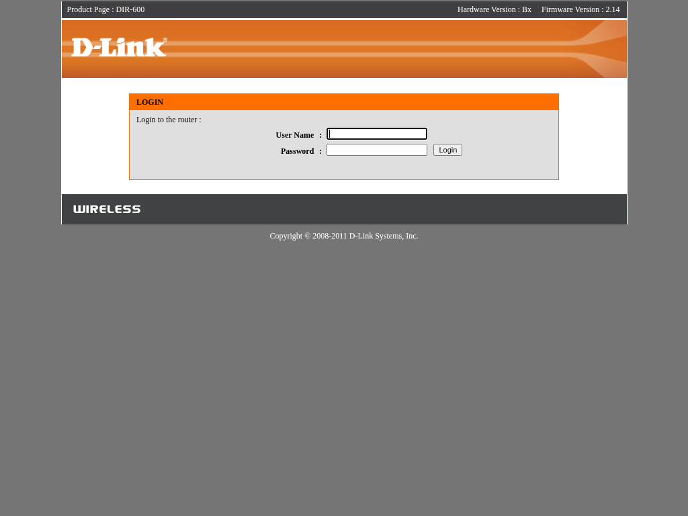

[+] Web server analysis of emulated device
The web checking module conducts web testing, including SSL tests, web crawling and vulnerability scanning. It uses tools like Nikto, Archni and Testssl.sh to identify and analyze web services, generate screenshots and check for basic HTTP authentication. It also cross checks for the already discovered issues from PHP and Lua analysis.
[*] No basic auth found in Nmap logs
==> Starting screenshot for 192.168.0.1:80
[+] Screenshot of web server on IP 192.168.0.1:80 created

==> Starting web server crawling for 192.168.0.1:80
[*] HTTP status detection failed with non 200ok return code: 404/NA
[+] Found 100 unique valid responses - please check the log for further details
[+] Found possible vulnerability external.semgrep-rules.php.lang.security.injection.echoed-request in semgrep analysis for bsc_sms_inbox.php.
[+] Found possible vulnerability external.semgrep-rules.php.lang.security.injection.echoed-request in semgrep analysis for bsc_sms_send.php.
[+] Found possible vulnerability external.semgrep-rules.php.lang.security.injection.echoed-request in semgrep analysis for check_stats.php.
[+] Found possible vulnerability external.semgrep-rules.php.lang.security.exec-use in semgrep analysis for command.php.
[+] Found possible vulnerability external.semgrep-rules.php.lang.security.injection.echoed-request in semgrep analysis for wandetect.php.
[+] Found possible vulnerability external.semgrep-rules.php.lang.security.injection.echoed-request in semgrep analysis for wpsacts.php.
[*] Finished web server crawling for 192.168.0.1:80.
==> Nikto web server analysis for 192.168.0.1:80
- Nikto v2.6.1
---------------------------------------------------------------------------
+ Target IP: 192.168.0.1
+ Target Hostname: 192.168.0.1
+ Target Port: 80
+ Platform: Unknown
+ Start Time: 2026-09-21 03:47:18 (GMT0)
---------------------------------------------------------------------------
+ Server: Linux, HTTP/1.1, DIR-600 Ver 2.14
+ No CGI Directories found (use '-C all' to force check all possible dirs). CGI tests skipped.
+ [500164] /favicon.ico: identifies this app/server as: D-Link. See: https://en.wikipedia.org/wiki/Favicon
+ [013587] /: Suggested security header missing: referrer-policy. See: https://developer.mozilla.org/en-US/docs/Web/HTTP/Headers/Referrer-Policy
+ [013587] /: Suggested security header missing: strict-transport-security. See: https://developer.mozilla.org/en-US/docs/Web/HTTP/Headers/Strict-Transport-Security
+ [013587] /: Suggested security header missing: x-content-type-options. See: https://developer.mozilla.org/en-US/docs/Web/HTTP/Headers/X-Content-Type-Options
+ [013587] /: Suggested security header missing: permissions-policy. See: https://developer.mozilla.org/en-US/docs/Web/HTTP/Headers/Permissions-Policy
+ [013587] /: Suggested security header missing: content-security-policy. See: https://developer.mozilla.org/en-US/docs/Web/HTTP/CSP
+ [007342] /: X-Frame-Options header is deprecated and was replaced with the Content-Security-Policy HTTP header with the frame-ancestors directive. See: https://developer.mozilla.org/en-US/docs/Web/HTTP/Reference/Headers/X-Frame-Options
+ [007352] /: The X-Content-Type-Options header is not set. This could allow the user agent to render the content of the site in a different fashion to the MIME type. See: https://www.netsparker.com/web-vulnerability-scanner/vulnerabilities/missing-content-type-header/
+ 8169 requests: 1 error and 8 items reported on the remote host
+ End Time: 2026-09-21 03:47:40 (GMT0) (22 seconds)
---------------------------------------------------------------------------
+ 1 host(s) tested
*********************************************************************
Portions of the server's headers (DIR-600) are not in
the Nikto 2.6.1 database or are newer than the known string. Would you like
to submit this information (*no server specific data*) to CIRT.net
for a Nikto update (or you may email to sullo@cirt.net) (y/n)? [*] Finished Nikto web server analysis for 192.168.0.1:80
[*] Web server checks for emulated system with IP 192.168.0.1 finished